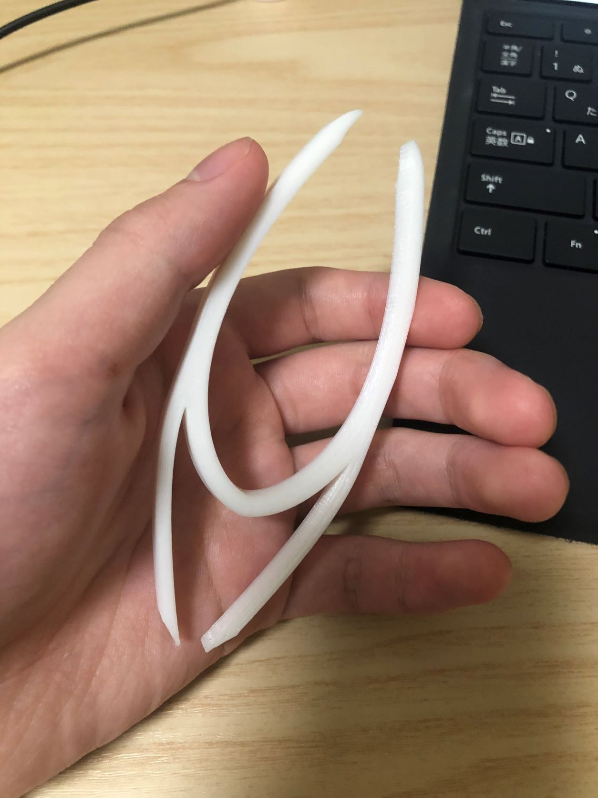
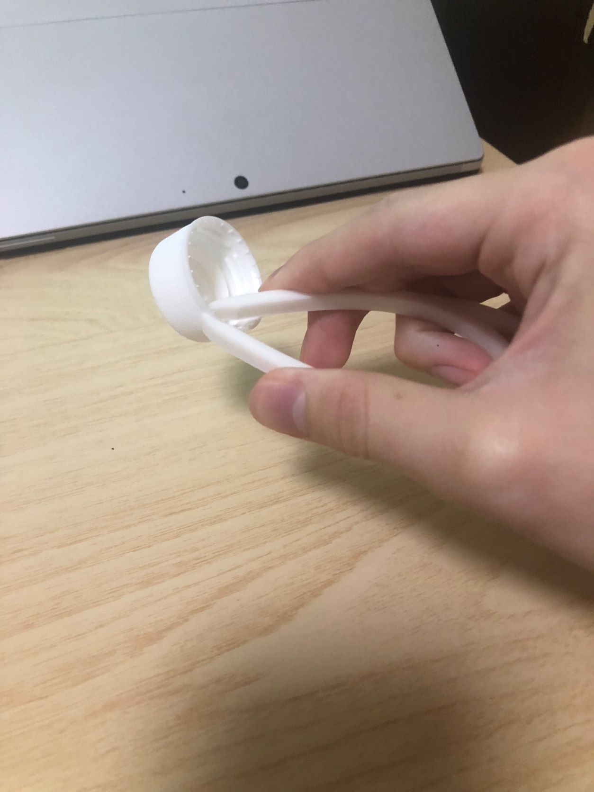
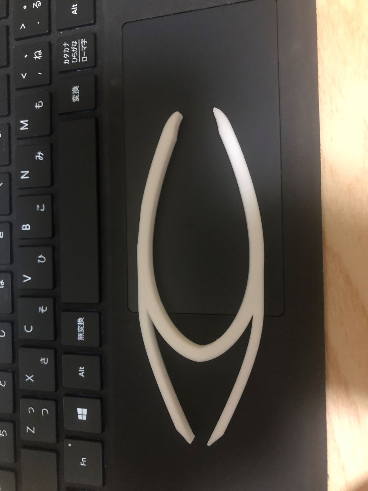

デジタルファブリケーション 第１回Assignment
202101761 岡本翔馬
1.作品名 : 流動的デザインのピンセット
2.構想段階のスケッチ
3.実際に作成した作品
  
4.作品の設計
5.作品の説明
- 少し変わったデザインのピンセット。流動的な、なめらかな弧描いており、とても持ちやすい。
- サイズ感はちょうどよく手のひらにフィットし、だいたいの大きさのものはつまむことができる。
- このデザインのため、両端のどちらでも物をつまめる設計になっている。
つめの開く距離が両端で異なるため、用途によって使い分けることも可能である。
6.なぜこの作品を作ろうという想いに至ったか
- ピンセットというある程度その形や機能が決められているなかで、どれだけ新たなデザインでより便利な機能を付け加えることができるか思考した結果がこの作品であり。
初めての3Dプリント作成という中でレベル的にもデザインしやすく、シンプルながらもあまり見ないデザインを心掛けた。
7.制作プロセスの中で調べたこと
- Fusion360の使い方がいまいち把握できなかったため、使い方を説明しているサイトなどで使い方を調べた。